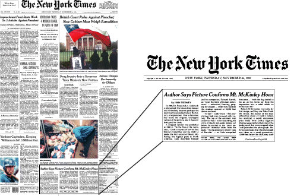

After 90 years the Polar Controversy is still front page news.New York Times - Author Says Picture Confirms Mt. McKinley Hoax

Washington Post - Arctic Snow Job
Washington Post - Staking Out the North Pole Position
New York Times - Who discovered the North Pole?
New York Times - Who Reached North Pole First? Historian's Solutions
Frederick Post - Book addresses a 'polarizing' debate
Popular Science - Who Was First at the North Pole?